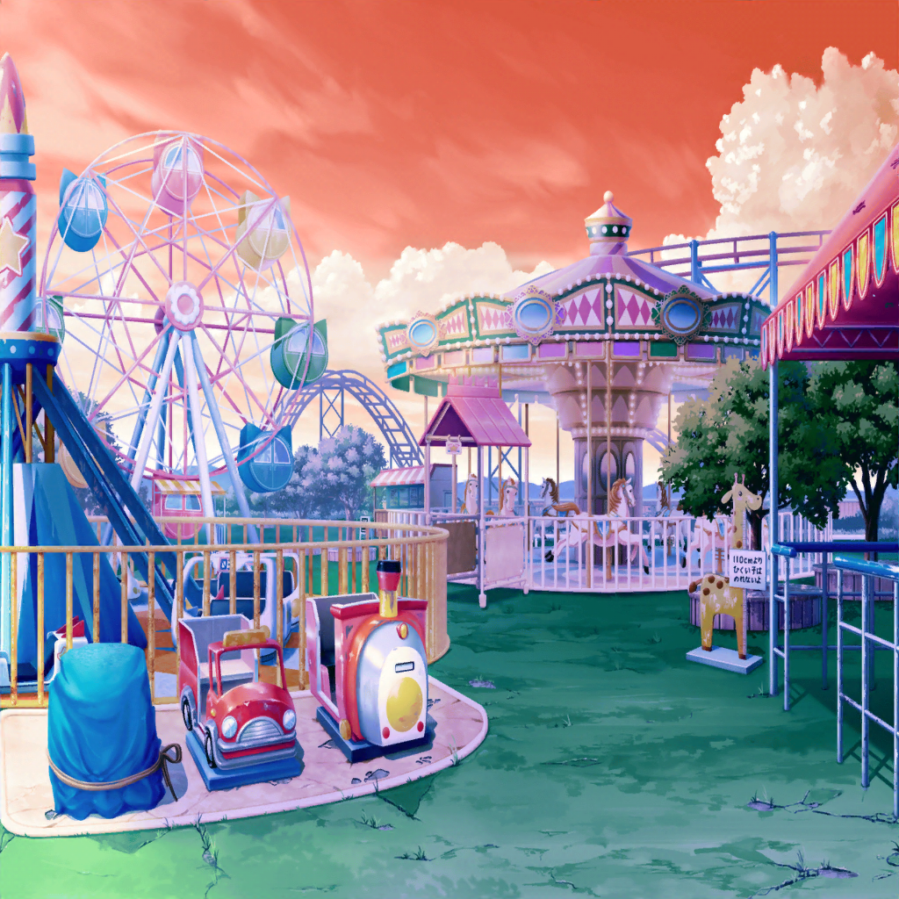

翌日
花咲川スマイル遊園地
美咲
なんか心配かけちゃってごめん……
はぐみ
ううん！ みーくんが元気になってよかったよ〜！
花音
うん、本当に……
薫
こうしてまた笑顔で全員集合できて嬉しいよ
こころ
待って。全員じゃないわ。ミッシェルがいないもの
こころ
最近よく来ると思ってたのに、
また美咲に任せてお休みしてるのかしら？
美咲
何度も説明してるけど、ちょっとした事情がありまして
花音
あはは……
こころ
まあいいわ！ またみんなで壁画の続きを描いていきましょう！
美咲
でもこれ、ほとんど完成してない？
みんな好きなもの一通り描いたし、
それなりにできてると思うけど？
こころ
うーん、でもまだ完成って感じがしないのよ。
なんだか足りない気がするの
花音
言われてみれば、ちょっと物足りない感じがするかも
薫
思うことは同じだね。
実は私も何かが欠けているような気がしていたんだ
はぐみ
みんな、そうなの！？
はぐみも何か足りないなって思ってたんだ！
美咲
ええ？ そ、そんなに何か足りてないかなー……？
こころ
なんだか、みんなで描いた感じがしないのよね
美咲
みんなで……？
こころ
……あ！ わかったわ！
この絵、美咲が何も描いていないのよ！
美咲
あ、あたし！？
はぐみ
そういえば、ミッシェルは描いてくれたけど、
みーくんは描いてない！
薫
どうやら足りないものの正体はそれのようだね
美咲
ミッシェルが描いてるなら、
あたしも描いたことになるんだけど……
はぐみ
ミッシェルが描いても、みーくんが描いたことにならないよー！
薫
そう。ミッシェルはミッシェル。美咲は美咲なのだからね
美咲
……そっか。
ホント、あんた達の中では別人なんだね
はぐみ
も〜！ 当たり前のこと言ってないで、みーくんも何か描いて！
花音
ふふ、美咲ちゃん、ここにペンキと筆置いておくね
美咲
花音さんまで……
うーん、描けっていきなり言われてもなー……
こころ
笑顔になれるものならなんでもいいのよ！
美咲
笑顔になれるもの……
そういえば、誰かが描いてると思ったけどあれがないじゃん
花音
あれ？
美咲
こうしてこうして……よし、できた
こころ・はぐみ
これって……ミッシェル！
美咲
ミッシェルはハロハピの守護神なんでしょ？
笑顔のシンボルなら描いておかないとじゃない？
こころ
とってもいいわ、美咲！
笑顔と言ったら、やっぱりミッシェルね！
こころ
でもミッシェルだけじゃ寂しいわ！
ミッシェルがいるならこの子もいなくちゃ！
美咲
この子？
こころ
ミッシェルの仲良しと言えば……
はい！ 描けたわ！
美咲
これは……え？ 誰？
こころ
決まってるじゃない！ 美咲よ！
美咲
あ、あたし？
かろうじて人の形はしてるっぽいけど……
美咲
ま、まあ、こころのはちゃめちゃな絵じゃこうなるか……
はぐみ
みーくんとミッシェルがいるなら……
やっぱり、こころんもいなくっちゃ！
はぐみ
えへへ、はぐみが描いてあげる！
こころ
ありがとう、はぐみ！ とってもかわいいわ！
薫
フフ、これは私も絵の才能を披露しなければならないようだね。
儚くも可憐な花音をここに描いてあげよう
花音
えっ、私も？
そ、それじゃ薫さんとはぐみちゃんも描かなくちゃ！
美咲
……結局、ハロハピ全員集合しちゃったね
こころ
ハロハピは六人いなくちゃ！ とっても楽しい絵になったわ！
薫
見ているだけで胸が儚さでいっぱいになるよ……
ああ、儚い……！
花音
ふふ、この絵でお客さんを楽しい気持ちにできたらいいね
はぐみ
きっとできるよ！
この絵にはハロハピの楽しいがたくさん詰まってるもん！
こころ
……そうだわ！
美咲
どうしたの、急に？
こころ
新曲、この絵を元にして作るのはどうかしら？
花音
新曲って、こころちゃんがどんな曲にするか迷ってなかったっけ？
こころ
ええ、でも今決めたわ！ あたし、この絵を曲にしたいの！
こころ
この絵にはあたしが曲にしたいものが詰まってるもの！
薫
ああ、こころ……それはとても素晴らしいアイディアだよ！
はぐみ
うんうん！ はぐみもさんせー！
こころ
それじゃ決まりねっ！
こころ
最初は……らららららーらーらー♪ かしら？
美咲
え？ ちょっと、もう曲を作り始めてんの！？
こころ
この絵を見てたら、どんどんイメージが湧いてくるんだもの！
早く曲にしなくちゃ！
美咲
いや、いきなり歌われても困るってば！
こころ
らららららーらーらー♪
美咲
ああもう、待って！ 今、スマホで録音するから！